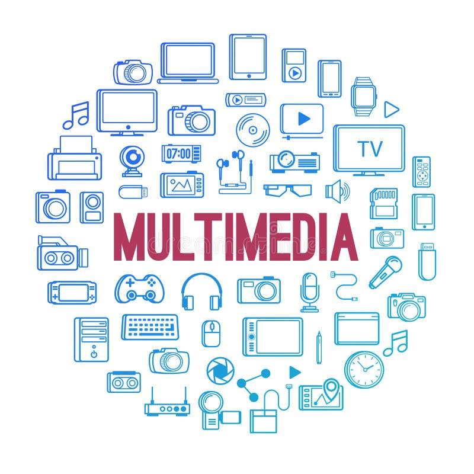
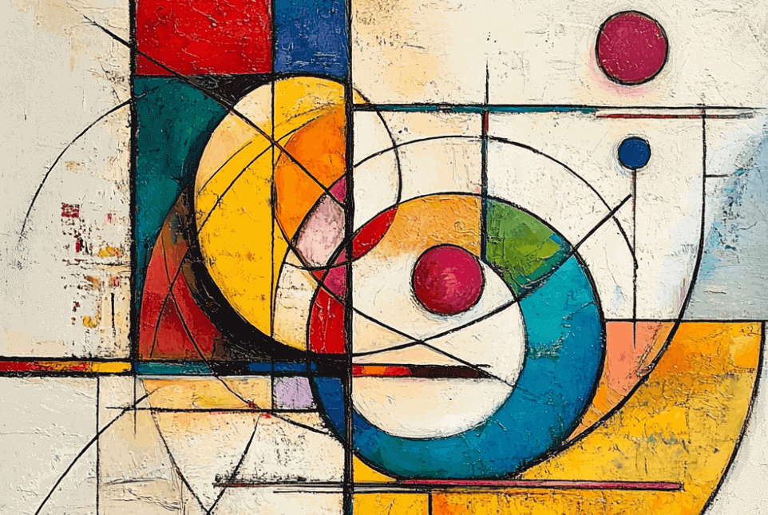
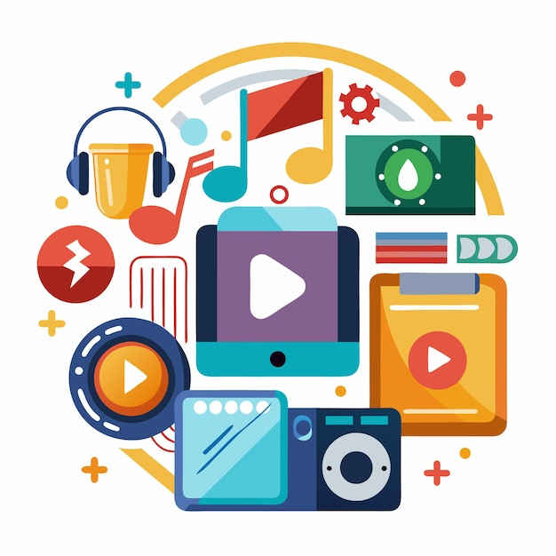

Quiénes somos
Somos un estudio de diseñadores multimedia.
Convertimos tus ideas en piezas que el público puede ver y recorrer.

Qué hacemos
- Identidad visual: logos y paletas.
- Animación 2D: motion graphics.
- Experiencias web: páginas claras.
- Arte digital: obras para exposiciones.
A quién nos dirigimos
Artistas, marcas pequeñas, festivales y museos.

Cómo trabajamos
- Escuchamos tu idea.
- Esbozamos propuestas.
- Producimos las piezas.
- Probamos y entregamos.
Cada proyecto dura entre tres y seis semanas.

Información y enlaces
Escríbenos a hola@kdestudios.example y te respondemos en dos días.